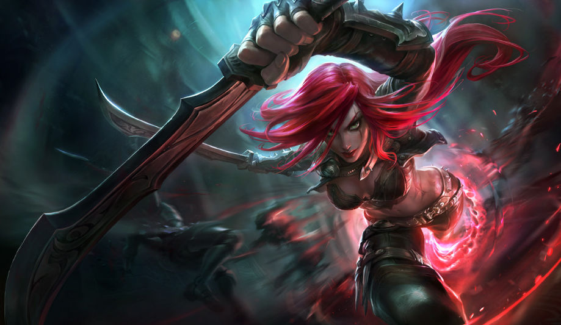

나의 모스트 챔피언 TOP3
1. 피즈
2. 카타리나
3. 사일러스
카타리나

카타리나
는
제가 가장 처음으로 시작한 챔피언입니다.
마찬가지로, 제가 카타리나를 강의하기에는 많이 부족하므로 이 또한 장인분의 채널과 강의영상을 올려놓을테니 잘 보고 배워보시길 바랍니다.
카타장인의 유튜브채널
장인분의 강의영상(룬, 템트리)
장인분의 강의영상(라인전, 스킬, 암살, 스플릿, 한타)